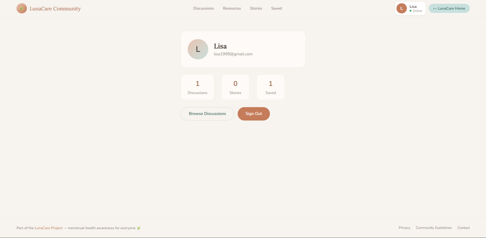

Problem
Many health communities feel too public or too hard to enter.
Community Platform · HXI / UX
FemCare Community 2.0 is a discussion-driven menstrual-health community with anonymous posting, peer stories, curated resources, saved posts, and profile-based participation. The core design problem was not only information access, but how to lower embarrassment, uncertainty, and fear of being judged.

Overview
Many health communities feel too public or too hard to enter.
Use anonymity, support cues, and clear content to make posting easier.
Make users feel safe enough to ask a question quickly.
Process
The hero, wellness cards, and “You Are Safe Here” message all reinforce tone and moderation before deeper interaction begins.
Posting begins from a calm input box with anonymous toggle and simple topical categorization instead of heavy forms.
The discussion page pairs the main thread list with resource shortcuts, wellness tips, reassurance, and product chips.
Saved posts, profiles, stories, and resources turn the product from one-off Q&A into an ongoing support ecosystem.
HXI Strategy
Posting is built into both quick-post and modal flows, lowering social risk for first questions.
Core community destinations create a clear mental model: discussions, resources, stories, saved, profile.
Contextual support sits beside the feed, so users can pivot to reading or self-soothing without leaving the page.
Firebase-driven activity patterns make the community feel active, responsive, and alive.
Reconstructed Wireframes
Wireframe 01
Wireframe 02
Wireframe 03
Shipped Screens
Home hero
The first screen foregrounds belonging and question safety before any heavy information or interaction demand.

Pathway cards
Three clear next steps help users choose between discussion, resources, and stories without cognitive overload.

Discussion entry
The top of the feed combines filters, search, anonymous posting, and resource shortcuts in one support-oriented view.

Discussion feed
Post cards are readable, lightweight, and emotionally legible, using tags and anonymity chips to reduce social friction.

Resources
The content library shifts the platform from pure community support into expert-guided self-education.

Stories
User stories extend the product’s empathy model by making emotional validation visible and repeatable.

Profile / retention loop
The profile page closes the feedback loop by showing participation history, saved content, and a reason to come back.
Synthesized User Feedback
“Anonymous posting makes this feel much easier to use than a normal forum.”
Teen participant · synthesized quote
The anonymity toggle directly addresses fear of exposure, which is often the biggest blocker in sensitive-topic communities.
“I like that resources sit next to discussions, so I can read first if I’m nervous.”
First-time visitor · synthesized quote
Supporting anxious users with alternate pathways helps prevent bounce or silent drop-off.
“The stories page makes the whole platform feel less lonely.”
Young adult user · synthesized quote
Community storytelling adds emotional proof, not just informational proof.
Usability Synthesis
Design Insight
Why it matters
Users do not arrive ready to speak. The interface has to earn that readiness.
The product does this with privacy cues, soft visuals, visible moderation language, and optional reading-first pathways.
HXI Takeaway
The best community interaction pattern here is not a feature. It is the lowering of social risk.
That makes the product more than a forum UI. It becomes a designed emotional environment for vulnerable conversations.